Psoralen treatment - Non equilibrium #3
Processing
01_23_19
- Import
- Quantification <<<<<<< HEAD
- Combine SWV/GC
- Processed Dataset ======= >>>>>>> 00cf73fd426532c7e10ba192cfd9fd2b62bf3ecf
library(tidyverse)
library(cowplot)
library(broom)
library(modelr)
library(viridis)
library(lubridate)
library(hms)
knitr::opts_chunk$set(tidy.opts=list(width.cutoff=60),tidy=TRUE, echo = TRUE, message=FALSE, warning=FALSE, fig.align="center")
source("../../tools/echem_processing_tools.R")
source("../../tools/plotting_tools.R")
theme_set(theme_1())Import
SWV data
First, import all SWV files.
<<<<<<< HEADSWV_file_paths <- dir(path='../Data', pattern = "[SWV]+.+[txt]$",recursive = T,full.names = T)
SWV_filenames <- basename(SWV_file_paths)
swv_data_cols <- c('E','i1','i2')
filename_cols = c('PHZadded','treatment','reactor','run','echem','rep')
swv_skip_rows=18
swv_data <- echem_import_to_df(filenames = SWV_filenames,
file_paths = SWV_file_paths,
data_cols = swv_data_cols,
skip_rows = swv_skip_rows,
filename_cols = filename_cols,
rep = T) %>%
mutate(rep=rep-1)These are all of the scans taken in the transfer reactor. This is i1, which is usually used for the downstream quantification:
ggplot(swv_data %>% filter(electrode=='i1' & reactor=='transfer'), aes(x=E, y=current,color=rep,group=factor(rep)))+geom_path()+
facet_grid(treatment~run,scales='free')+
scale_color_viridis()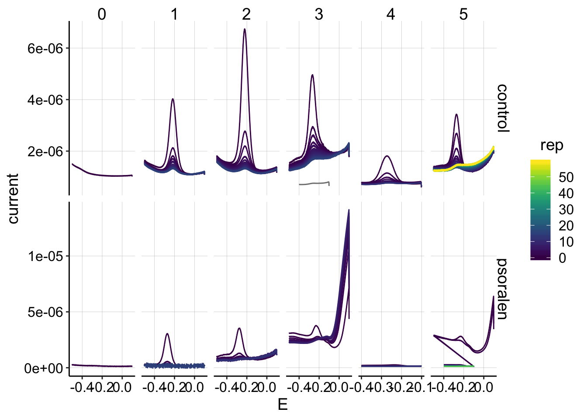
It looks about as expected. Unfortunately there is a high background signal that comes up in the psoralen starting at run 3. I switched to SWVslow parameters after that.
Here’s i2:
ggplot(swv_data %>% filter(electrode=='i2' & reactor=='transfer'), aes(x=E, y=current,color=rep,group=factor(rep)))+geom_path()+
facet_grid(treatment~run,scales='free')+
scale_color_viridis()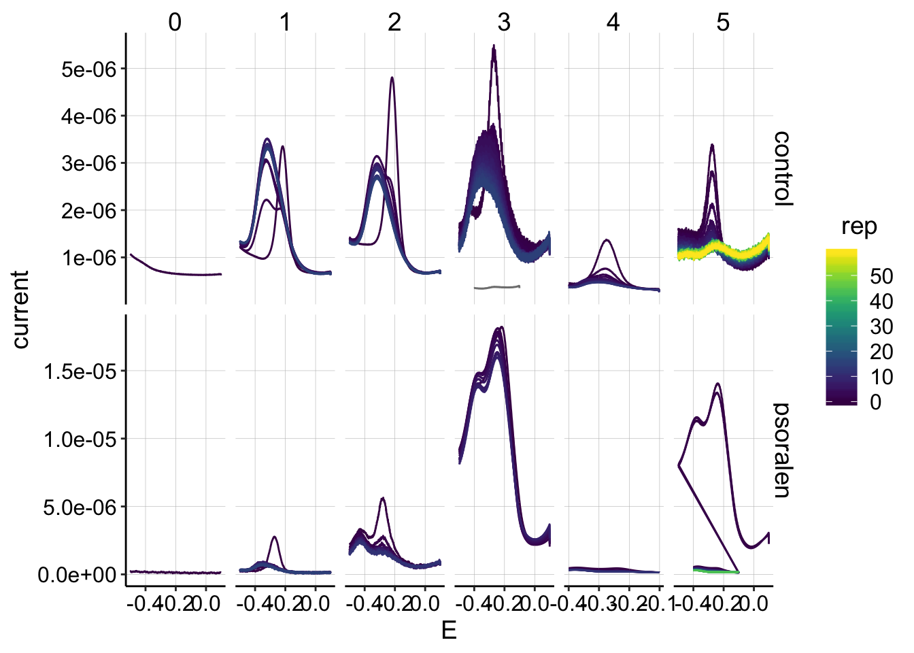 It looks typical. Taking an SWV after GC results in this weird peak at the collector electrode…at least it’s consistent. For run 5, the psoralen biofilm was started with SWV fast parameters and it looked bad, so I restarted it with swv slow parameters, so the real scans are very tiny on this plot.
Let’s focus on the first run for both conditions.
ggplot(swv_data %>% filter(electrode=='i1' & reactor=='transfer' & run==1 & rep<14 & rep>0), aes(x=E, y=current,color=rep,group=factor(rep)))+geom_path()+
facet_wrap(~treatment,scales='free')+
scale_color_viridis()SWV_file_paths <- dir(path = "../Data", pattern = "[SWV]+.+[txt]$",
recursive = T, full.names = T)
SWV_filenames <- basename(SWV_file_paths)
swv_data_cols <- c("E", "i1", "i2")
filename_cols = c("PHZadded", "treatment", "reactor", "run",
"echem", "rep")
swv_skip_rows = 18
swv_data <- echem_import_to_df(filenames = SWV_filenames, file_paths = SWV_file_paths,
data_cols = swv_data_cols, skip_rows = swv_skip_rows, filename_cols = filename_cols,
rep = T) %>% mutate(rep = rep - 1)These are all of the scans taken in the transfer reactor. This is i1, which is usually used for the downstream quantification:
ggplot(swv_data %>% filter(electrode == "i1" & reactor == "transfer"),
aes(x = E, y = current, color = rep, group = factor(rep))) +
geom_path() + facet_grid(treatment ~ run, scales = "free") +
scale_color_viridis()It looks about as expected. Unfortunately there is a high background signal that comes up in the psoralen starting at run 3. I switched to SWVslow parameters after that.
Here’s i2:
ggplot(swv_data %>% filter(electrode == "i2" & reactor == "transfer"),
aes(x = E, y = current, color = rep, group = factor(rep))) +
geom_path() + facet_grid(treatment ~ run, scales = "free") +
scale_color_viridis()It looks typical. Taking an SWV after GC results in this weird peak at the collector electrode…at least it’s consistent. For run 5, the psoralen biofilm was started with SWV fast parameters and it looked bad, so I restarted it with swv slow parameters, so the real scans are very tiny on this plot.
Let’s focus on the first run for both conditions.
ggplot(swv_data %>% filter(electrode == "i1" & reactor == "transfer" &
run == 1 & rep < 14 & rep > 0), aes(x = E, y = current, color = rep,
group = factor(rep))) + geom_path() + facet_wrap(~treatment,
scales = "free") + scale_color_viridis()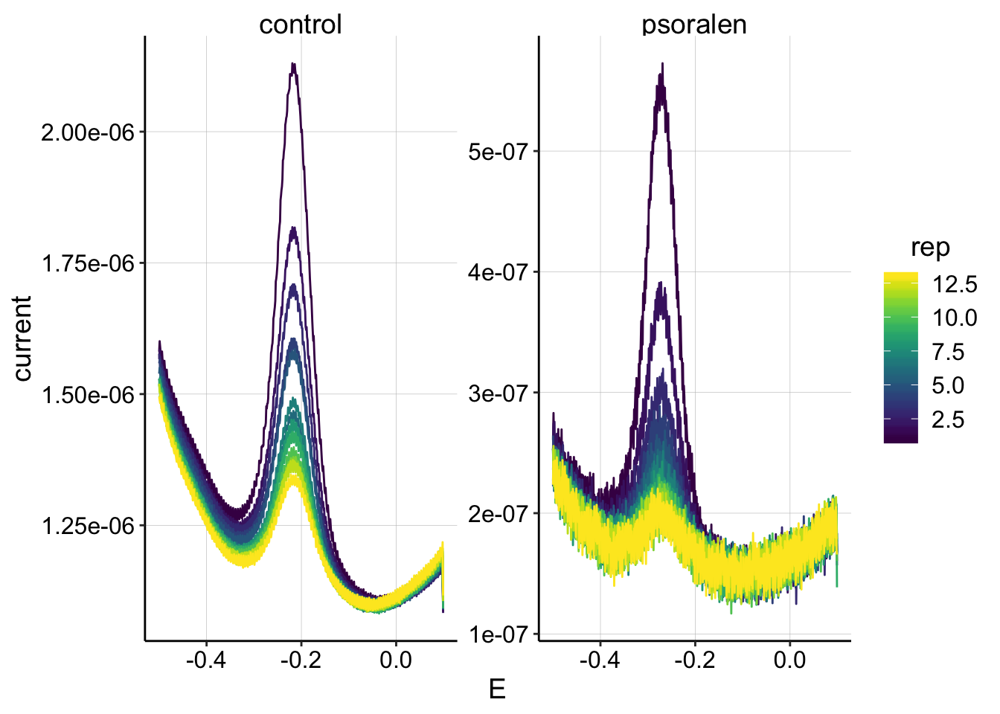 It looks pretty good, although the psoralen data may need some loess smoothing. Let’s ignore that for now.
GC data
Let’s import all the GC data.
<<<<<<< HEADGC_file_paths <- dir(path='../Data', pattern = "[GC]+.+[txt]$",recursive = T,full.names = T)
GC_filenames <- basename(GC_file_paths)
gc_data_cols <- c('E','i1','i2','t')
filename_cols = c('PHZadded','treatment','reactor','run','echem','rep')
gc_skip_rows=21
gc_data <- echem_import_to_df(filenames = GC_filenames,
file_paths = GC_file_paths,
data_cols = gc_data_cols,
skip_rows = gc_skip_rows,
filename_cols = filename_cols,
rep = T)Here’s all the data plotted.
ggplot(gc_data %>% filter(reactor=='transfer'), aes(x=E, y=current,color=rep,group=electrode))+
geom_point(size=0.5)+
facet_grid(treatment~run,scales='free')+
scale_x_reverse() +
scale_color_viridis(discrete = F)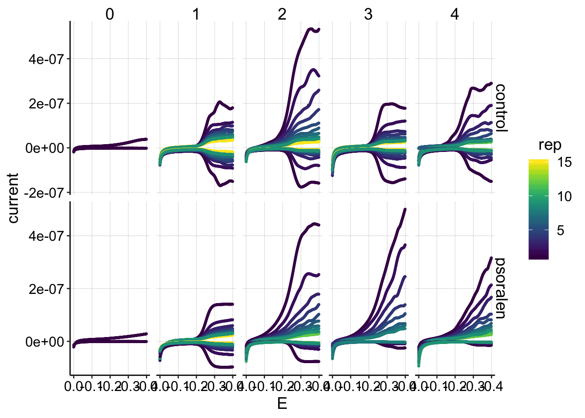 Eh, this data looks ok, but not great. I do not understand why the curves get “wiggly” or why such a weird high signal pops up on the generators. These weird effects seemed to be indpendent of potentiostat and not sensitive to minor changes in where the IDA faced in the reactors. I think the 760b might give somewhat smoother results, but it’s perplexing that it is relatively inconsistent. Note that for runs 1 and 2 the 760e was used with the control and the 760b with psoralen, and runs 3 and 4 were the exact opposite.
It looks like the collectors were somewhat more immune to the wiggliness than the generators, but I do worry that these anomalies will affect the quantification…For now, I think we should look at the series more closely, and try to make sure that the wiggles are small compared to the main PYO peak arising around 250mV. Assuming that is true, I think we should be fine.
Let’s look at the collector data specifically:
ggplot(gc_data %>% filter(reactor=='transfer' & electrode=='i2'), aes(x=E, y=-current,color=rep,group=factor(rep))) +
geom_path()+
facet_grid(treatment~run,scales='free')+
scale_color_viridis()+
scale_x_reverse()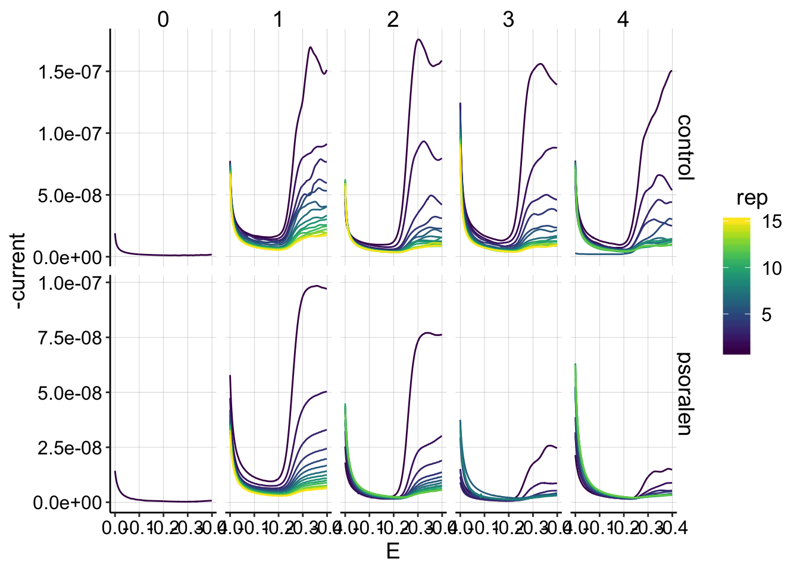 The collector is more robus to the wiggliness, but it is still apparent in many curves.
=======GC_file_paths <- dir(path = "../Data", pattern = "[GC]+.+[txt]$",
recursive = T, full.names = T)
GC_filenames <- basename(GC_file_paths)
gc_data_cols <- c("E", "i1", "i2", "t")
filename_cols = c("PHZadded", "treatment", "reactor", "run",
"echem", "rep")
gc_skip_rows = 21
gc_data <- echem_import_to_df(filenames = GC_filenames, file_paths = GC_file_paths,
data_cols = gc_data_cols, skip_rows = gc_skip_rows, filename_cols = filename_cols,
rep = T)Here’s all the data plotted.
ggplot(gc_data %>% filter(reactor == "transfer"), aes(x = E,
y = current, color = rep, group = electrode)) + geom_point(size = 0.5) +
facet_grid(treatment ~ run, scales = "free") + scale_x_reverse() +
scale_color_viridis(discrete = F)Eh, this data looks ok, but not great. I do not understand why the curves get “wiggly” or why such a weird high signal pops up on the generators. These weird effects seemed to be indpendent of potentiostat and not sensitive to minor changes in where the IDA faced in the reactors. I think the 760b might give somewhat smoother results, but it’s perplexing that it is relatively inconsistent. Note that for runs 1 and 2 the 760e was used with the control and the 760b with psoralen, and runs 3 and 4 were the exact opposite.
It looks like the collectors were somewhat more immune to the wiggliness than the generators, but I do worry that these anomalies will affect the quantification…For now, I think we should look at the series more closely, and try to make sure that the wiggles are small compared to the main PYO peak arising around 250mV. Assuming that is true, I think we should be fine.
Let’s look at the collector data specifically:
ggplot(gc_data %>% filter(reactor == "transfer" & electrode ==
"i2"), aes(x = E, y = -current, color = rep, group = factor(rep))) +
geom_path() + facet_grid(treatment ~ run, scales = "free") +
scale_color_viridis() + scale_x_reverse()Quantification
Control SWV
<<<<<<< HEADLet’s start with the control SWV data, which overall looks cleaner than the psoralen data.
swv_control_data <- swv_data %>%
filter(treatment=='control' & PHZaddedInt==75)
unique_id_cols = c('PHZadded','treatment','reactor','run','echem','rep','minutes','PHZaddedInt','electrode')
swv_control_signals_1 <- echem_signal(df = swv_control_data %>% filter(run!=4),
unique_id_cols = unique_id_cols,
max_interval = c(-0.2,-0.4),
min_interval = c(0.0,-0.4))
swv_control_signals_2 <- echem_signal(df = swv_control_data %>% filter(run==4),
unique_id_cols = unique_id_cols,
max_interval = c(-0.2,-0.4),
min_interval = c(-0.11,-0.4))
swv_control_signals = rbind(swv_control_signals_1,swv_control_signals_2)ggplot(swv_control_data %>% filter(electrode=='i1'),
aes(x = E, y = current, color = rep, shape=reactor, group=factor(rep))) +
geom_path()+
geom_point(data = swv_control_signals %>% filter(electrode=='i1'),
aes(x = E_from_maxs, y = current_from_maxs), color = 'red') +
geom_point(data = swv_control_signals %>% filter(electrode=='i1'),
aes(x = E_from_mins, y = current_from_mins), color = 'blue') +
facet_wrap(~run,scales='free')+
scale_x_reverse()+
scale_color_viridis()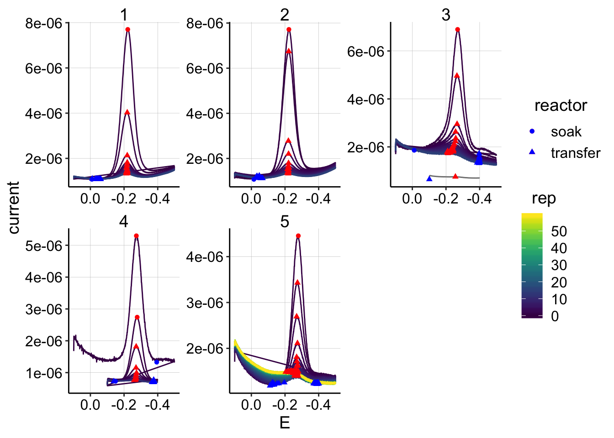
ggplot(swv_control_data %>% filter(electrode=='i1' & reactor=='transfer'),
aes(x = E, y = current, color = rep, shape=reactor, group=factor(rep))) +
geom_path()+
geom_point(data = swv_control_signals %>% filter(electrode=='i1' & reactor=='transfer'),
aes(x = E_from_maxs, y = current_from_maxs), color = 'red') +
geom_point(data = swv_control_signals %>% filter(electrode=='i1' & reactor=='transfer'),
aes(x = E_from_mins, y = current_from_mins), color = 'blue') +
facet_wrap(~run,scales='free')+
scale_x_reverse()+
scale_color_viridis()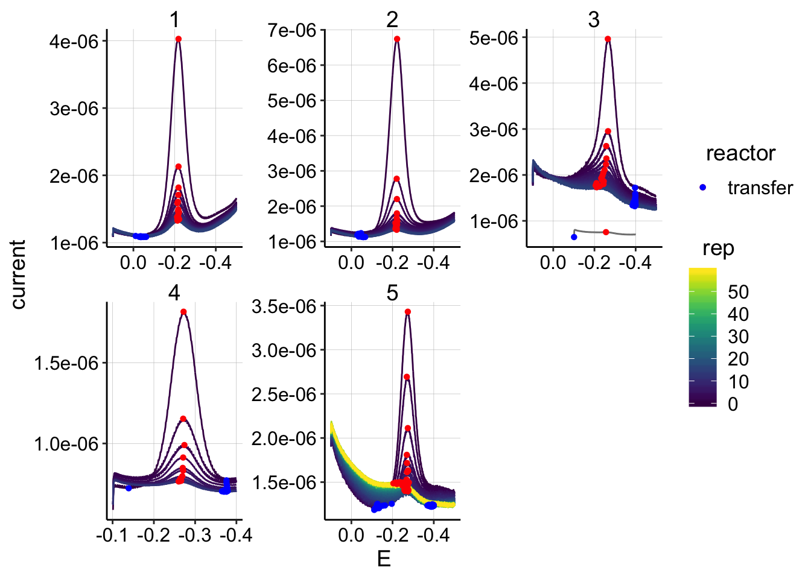 Overall, these look pretty good, there isn’t any crazy background that obviously messes with the quantification. Also, in the top plot, you can see that the soak scans aren’t way higher than the first rep 0 transfer scan, which will be useful for the \(D_m\) estimate.
Here’s what the i2 swvs look like:
ggplot(swv_control_data %>% filter(electrode=='i2' & reactor=='transfer' & rep>0),
aes(x = E, y = current, color = rep, shape=reactor, group=factor(rep))) +
geom_path()+
geom_point(data = swv_control_signals %>% filter(electrode=='i2' & reactor=='transfer' & rep>0),
aes(x = E_from_maxs, y = current_from_maxs), color = 'red') +
geom_point(data = swv_control_signals %>% filter(electrode=='i2' & reactor=='transfer' & rep>0),
aes(x = E_from_mins, y = current_from_mins), color = 'blue') +
facet_wrap(~run,scales='free')+
scale_x_reverse()+
scale_color_viridis()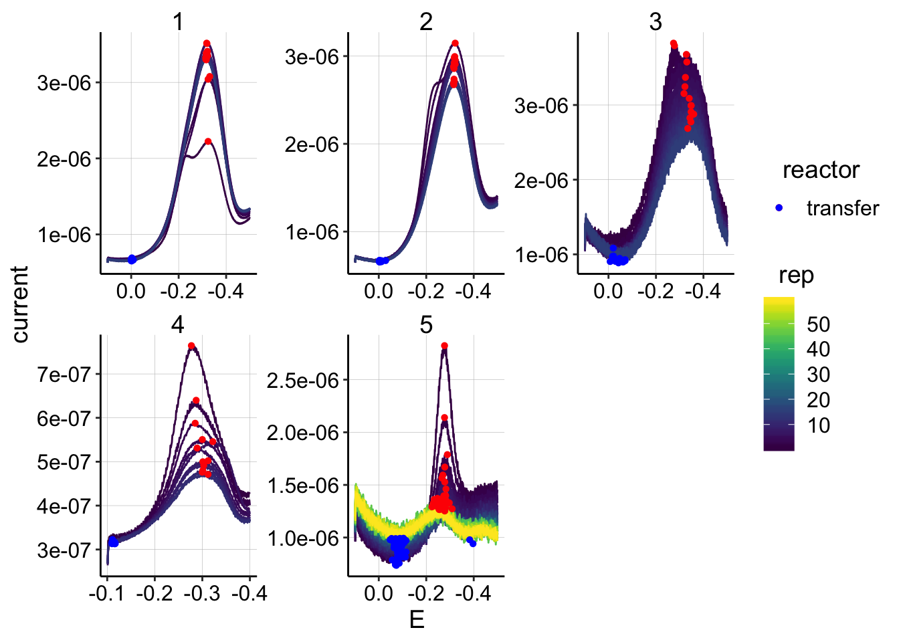 Again, following GC, swv i2 has a weird signal. This signal is still present in run 4 (SWV slow), so it’s not that time sensitive.
Let’s look at how the quantified signals decay over the reps.
ggplot(swv_control_signals, aes(x=rep, y=signal,shape=reactor,color=factor(run)))+geom_line()+geom_point()+
facet_wrap(~electrode)+
scale_color_viridis(discrete = T)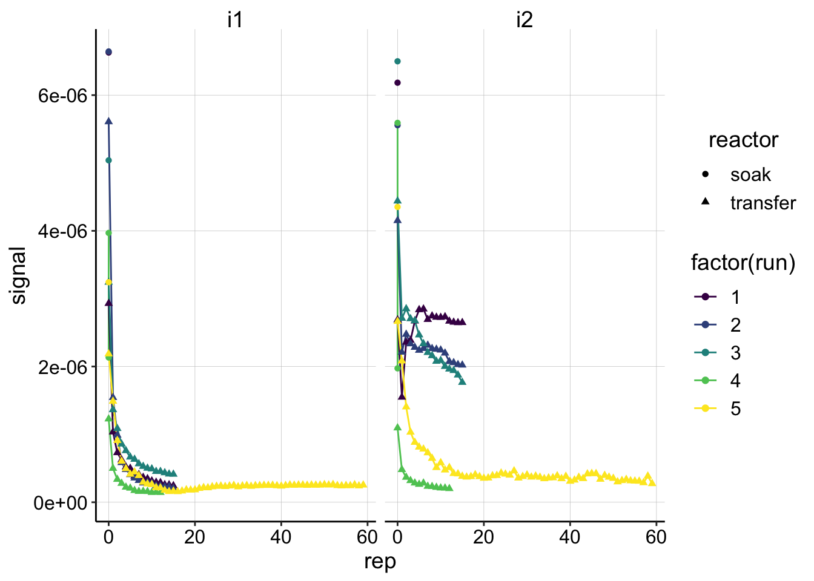 Overall, the control i1 signals look pretty consistent (except run 4 which was taken with swv slow). As expected the i2 signals look a little weird, except for runs 4 and 5. So maybe the SWV slow did deal with the contaminant better??
Psoralen SWV
Let’s examine the psoralen SWVs.
swv_psoralen_data <- swv_data %>%
filter(treatment=='psoralen' & PHZaddedInt==75) %>%
filter(echem!='SWV' | run!=5)
unique_id_cols = c('PHZadded','treatment','reactor','run','echem','rep','minutes','PHZaddedInt','electrode')
swv_psoralen_signals <- echem_signal(df = swv_psoralen_data,
unique_id_cols = unique_id_cols,
max_interval = c(-0.2,-0.4),
min_interval = c(-0.11,-0.4)) ggplot(swv_psoralen_data %>% filter(electrode=='i1' & reactor=='transfer' & rep>0),
aes(x = E, y = current, color = rep, shape=reactor, group=factor(rep))) +
geom_path()+
geom_point(data = swv_psoralen_signals %>% filter(electrode=='i1' & reactor=='transfer' & rep>0),
aes(x = E_from_maxs, y = current_from_maxs), color = 'red') +
geom_point(data = swv_psoralen_signals %>% filter(electrode=='i1' & reactor=='transfer' & rep>0),
aes(x = E_from_mins, y = current_from_mins), color = 'blue') +
facet_wrap(~run,scales='free')+
scale_x_reverse()+
scale_color_viridis()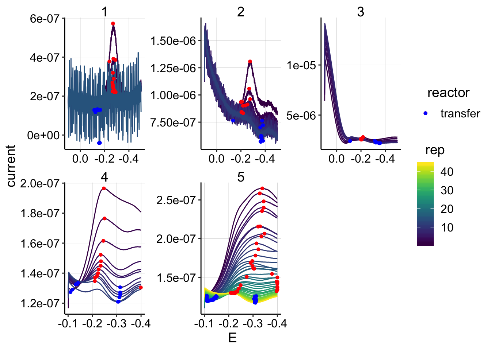
# ggplot(swv_psoralen_data %>% filter(electrode=='i1' & reactor=='transfer' & rep>0 & run==5),
# aes(x = E, y = current, color = rep, shape=echem, group=factor(rep))) +
# geom_point()+
# facet_wrap(~run,scales='free')+
# scale_x_reverse()+
# scale_color_viridis()Ok, we can see that some of the later scans during run 1 had very high noise. See below for a plot of run 1 excluding those sans. Rep 2 looks a little weird, maybe there’s some high noise, but not so bad. Run 3 is hard to examine because of the high background, see below for a better view. Runs 3 and 4 used SWVslows and both have unusually broad peaks, but the plots seem to decay monotonically.
Here’s run 1:
ggplot(swv_psoralen_data %>% filter(electrode=='i1' & reactor=='transfer' & rep>0 & rep<14 & run==1),
aes(x = E, y = current, color = rep, shape=reactor, group=factor(rep))) +
geom_path()+
geom_point(data = swv_psoralen_signals %>% filter(electrode=='i1' & reactor=='transfer' & rep>0 & rep<14 & run==1),
aes(x = E_from_maxs, y = current_from_maxs), color = 'red') +
geom_point(data = swv_psoralen_signals %>% filter(electrode=='i1' & reactor=='transfer' & rep>0 & rep<14 & run==1),
aes(x = E_from_mins, y = current_from_mins), color = 'blue') +
facet_wrap(~echem,scales='free')+
scale_x_reverse()+
scale_color_viridis()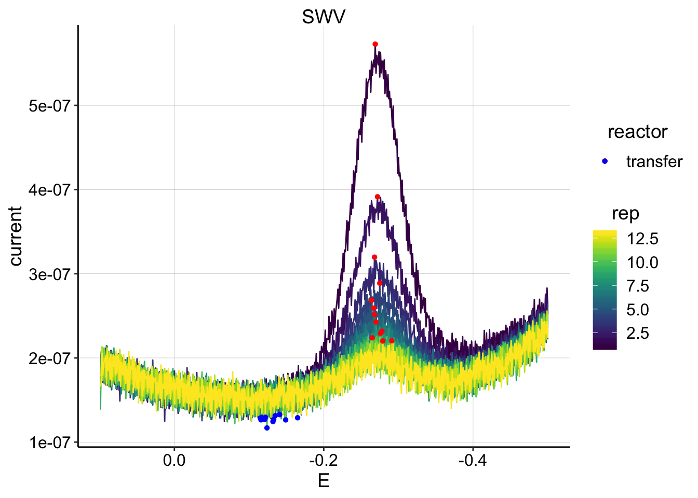 Run 1 looks quite good. Perhaps we should loess smooth later.
Here’s run 3:
ggplot(swv_psoralen_data %>% filter(electrode=='i1' & reactor=='transfer' & rep>0 & run==3),
aes(x = E, y = current, color = rep, shape=reactor, group=factor(rep))) +
geom_path()+
geom_point(data = swv_psoralen_signals %>% filter(electrode=='i1' & reactor=='transfer' & rep>0 & run==3),
aes(x = E_from_maxs, y = current_from_maxs), color = 'red') +
geom_point(data = swv_psoralen_signals %>% filter(electrode=='i1' & reactor=='transfer' & rep>0 & run==3),
aes(x = E_from_mins, y = current_from_mins), color = 'blue') +
facet_wrap(~echem,scales='free')+
ylim(2e-6,5e-6)+
scale_x_reverse()+
scale_color_viridis()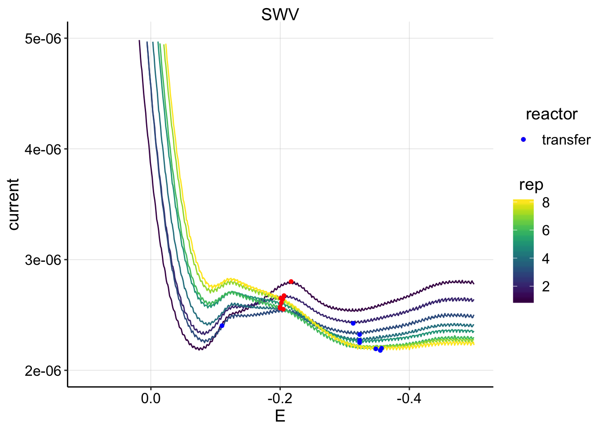 It’s clear that these peaks are going to be useless.
All GC
Now let’s quantify the GC data. I’m going to quantify at the last point of the scan ~ -0.4V and right after the PYO redox peak at -0.3 V.
gc_data_i2 <- gc_data %>%
filter(electrode=='i2' & PHZaddedInt==75) %>%
mutate(current=-current)
unique_id_cols = c('PHZadded','treatment','reactor','run','echem','rep','minutes','PHZaddedInt','electrode')
gc_signals <- echem_signal(df = gc_data_i2,
unique_id_cols = unique_id_cols,
max_interval = c(-0.399,-0.399),
min_interval = c(0.0,-0.4))
gc_signals_2 <- echem_signal(df = gc_data_i2,
unique_id_cols = unique_id_cols,
max_interval = c(-0.3,-0.3),
min_interval = c(0.0,-0.4)) ggplot(gc_data_i2 %>% filter(reactor=='transfer'),
aes(x = E, y = current, color = rep, shape=reactor, group=factor(rep))) +
geom_path()+
geom_point(data = gc_signals %>% filter(reactor=='transfer'),
aes(x = E_from_maxs, y = current_from_maxs), color = 'red') +
geom_point(data = gc_signals %>% filter(reactor=='transfer'),
aes(x = E_from_mins, y = current_from_mins), color = 'blue') +
facet_grid(treatment~run,scales='free')+
scale_x_reverse()+
scale_color_viridis() 
ggplot(gc_data_i2 %>% filter(reactor=='transfer') %>% filter(E>-0.5),
aes(x = E, y = current, color = rep, shape=reactor, group=factor(rep))) +
geom_path()+
geom_point(data = gc_signals_2 %>% filter(reactor=='transfer'),
aes(x = E_from_maxs, y = current_from_maxs), color = 'red') +
geom_point(data = gc_signals_2 %>% filter(reactor=='transfer'),
aes(x = E_from_mins, y = current_from_mins), color = 'blue') +
facet_grid(treatment~run,scales='free')+
scale_x_reverse()+
scale_color_viridis() 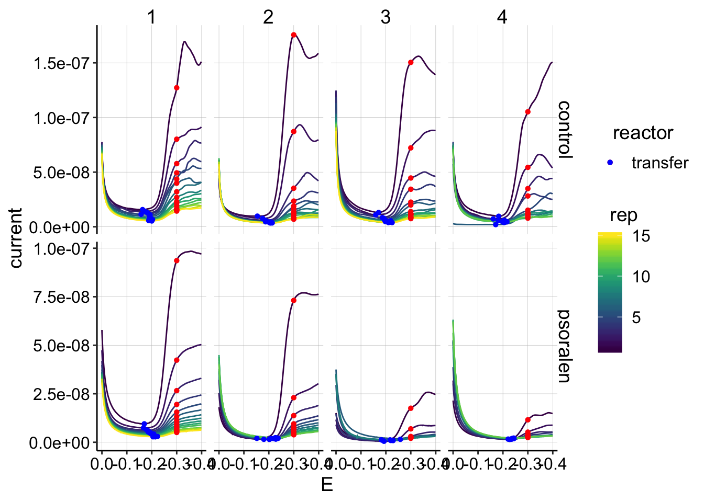 The quantifications look clean.
Let’s look at the soak data:
ggplot(gc_data_i2 %>% filter(reactor=='soak' & rep==1),
aes(x = E, y = current, color = factor(run), shape=reactor, linetype=treatment)) +
geom_path()+
geom_point(data = gc_signals %>% filter(reactor=='soak'),
aes(x = E_from_maxs, y = current_from_maxs), color = 'red') +
geom_point(data = gc_signals %>% filter(reactor=='soak'),
aes(x = E_from_mins, y = current_from_mins), color = 'blue') +
scale_x_reverse()+
scale_color_viridis(discrete = T)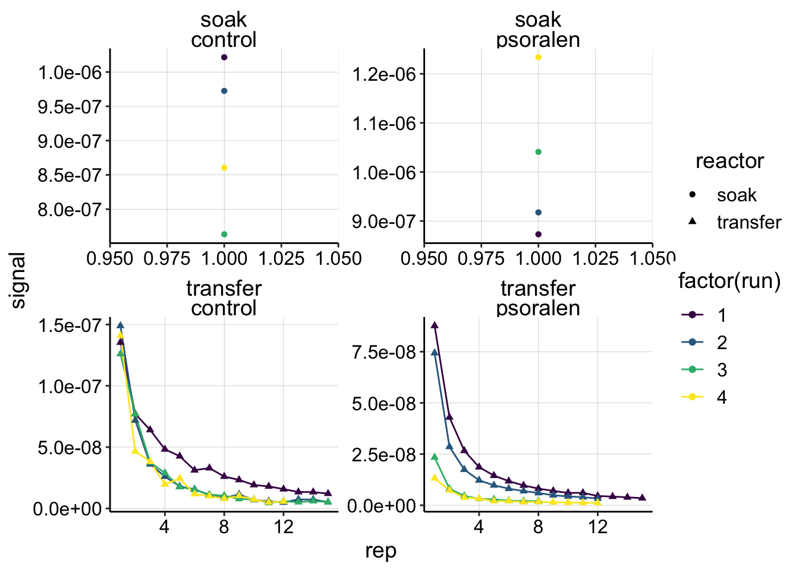 The only pattern I see is that the psoralen signal goes up each run in the soak reactor. Perhaps this is an indication that the biofilm is falling off and the soak IDA is able to see more of the solution?
Let’s look at all of the GC signals over the reps from each run.
ggplot(gc_signals, aes(x = rep, y = signal,shape=reactor, color=factor(run)))+
geom_line()+
geom_point()+
facet_wrap(reactor~treatment,scales='free')+
scale_color_viridis(discrete = T)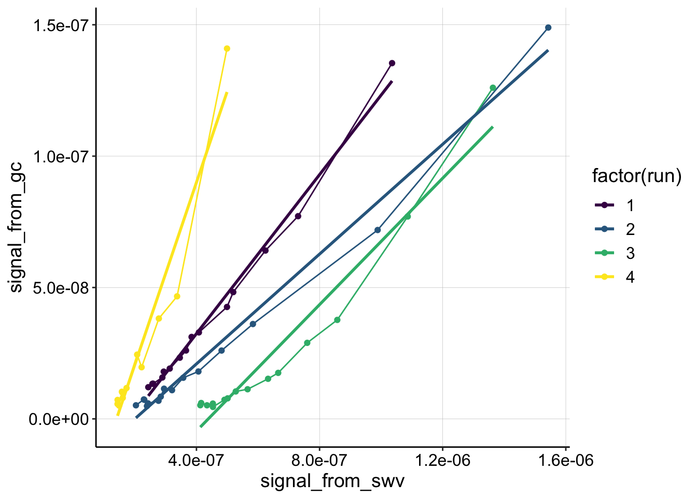 Ok, overall, things look reasonably good, they decline monotonically. It is interesting that run 1 seems to decay more slowly than the other runs. Also notice that the first transfer psoralen data points decrease from run 1 to 4, further indicating that the biofilm may have degraded, since less PYO was carried over. We should look at the timing from transfer to run 1 to be sure though.
Combine SWV/GC
Again we are going to look at the last GC datapoint and at -0.3, which has "_2" appended to everything. Here’s a quick pass at the data. See the analysis notebook for more detailed thoughts:
Control
swv_gc_control <- left_join(swv_control_signals %>% filter(run<=4),gc_signals,
by=c('run','rep','reactor','treatment'),
suffix=c('_from_swv','_from_gc'))
swv_gc_control_2 <- left_join(swv_control_signals %>% filter(run<=4),gc_signals_2,
by=c('run','rep','reactor','treatment'),
suffix=c('_from_swv','_from_gc'))
#write_csv(swv_gc_control,"./01_17_19_swv_gc_control_dap_processed.csv")
ggplot(swv_gc_control %>% filter(reactor=='transfer' & electrode_from_swv=='i1' & rep>0), aes(x = signal_from_swv, y = signal_from_gc, color=factor(run)))+
geom_line()+
geom_point()+
geom_smooth(method='lm',se=F)+
scale_color_viridis(discrete = T)
ggplot(swv_gc_control_2 %>% filter(reactor=='transfer' & electrode_from_swv=='i1' & rep>0), aes(x = signal_from_swv, y = signal_from_gc, color=factor(run)))+
geom_line()+
geom_point()+
geom_smooth(method='lm',se=F)+
scale_color_viridis(discrete = T)+
facet_wrap(~run,scales='free')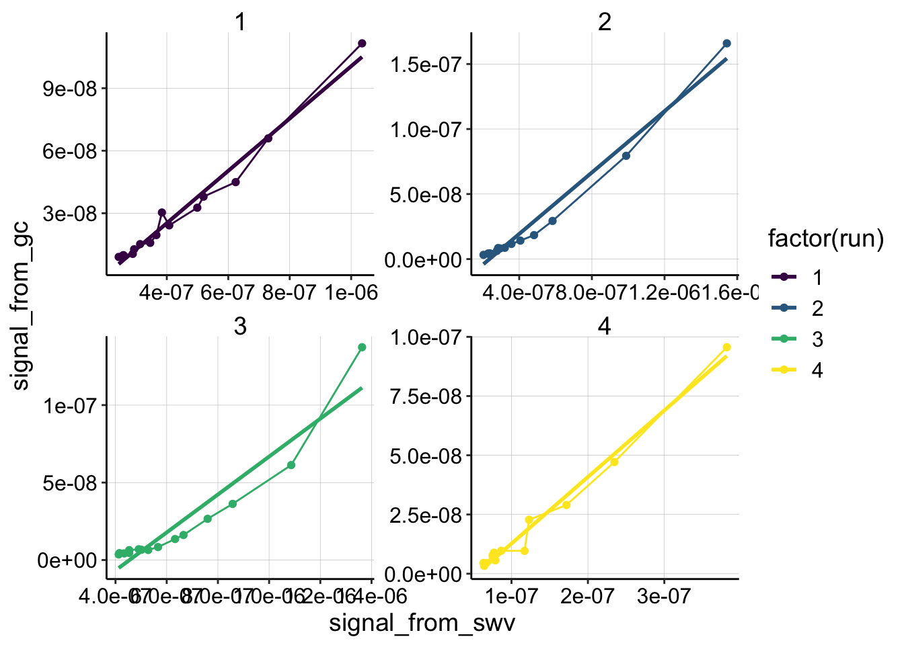
(swv_gc_control_lms <- swv_gc_control %>%
filter(reactor=='transfer' & rep>0 & electrode_from_swv=='i1') %>%
group_by(run,treatment,electrode_from_swv) %>%
do(tidy(lm(signal_from_gc~signal_from_swv,.))))## # A tibble: 8 x 8
## # Groups: run, treatment, electrode_from_swv [4]
## run treatment electrode_from_… term estimate std.error statistic
## <chr> <chr> <chr> <chr> <dbl> <dbl> <dbl>
## 1 1 control i1 (Int… -2.81e-8 1.94e-9 -14.5
## 2 1 control i1 sign… 1.51e-1 3.99e-3 38.0
## 3 2 control i1 (Int… -2.09e-8 1.98e-9 -10.6
## 4 2 control i1 sign… 1.05e-1 3.49e-3 30.0
## 5 3 control i1 (Int… -5.28e-8 5.49e-9 -9.62
## 6 3 control i1 sign… 1.20e-1 7.90e-3 15.2
## 7 4 control i1 (Int… -2.29e-8 4.58e-9 -5.00
## 8 4 control i1 sign… 3.91e-1 2.91e-2 13.4
## # … with 1 more variable: p.value <dbl>(swv_gc_control_lms_2 <- swv_gc_control_2 %>%
filter(reactor=='transfer' & rep>0 & electrode_from_swv=='i1') %>%
group_by(run,treatment,electrode_from_swv) %>%
do(tidy(lm(signal_from_gc~signal_from_swv,.))))## # A tibble: 8 x 8
## # Groups: run, treatment, electrode_from_swv [4]
## run treatment electrode_from_… term estimate std.error statistic
## <chr> <chr> <chr> <chr> <dbl> <dbl> <dbl>
## 1 1 control i1 (Int… -2.50e-8 2.53e-9 -9.89
## 2 1 control i1 sign… 1.26e-1 5.20e-3 24.2
## 3 2 control i1 (Int… -2.79e-8 2.95e-9 -9.45
## 4 2 control i1 sign… 1.18e-1 5.20e-3 22.7
## 5 3 control i1 (Int… -5.57e-8 7.72e-9 -7.21
## 6 3 control i1 sign… 1.22e-1 1.11e-2 11.0
## 7 4 control i1 (Int… -1.54e-8 1.83e-9 -8.41
## 8 4 control i1 sign… 2.81e-1 1.16e-2 24.2
## # … with 1 more variable: p.value <dbl>Psoralen
swv_gc_psoralen <- left_join(swv_psoralen_signals %>% filter(run<=4),gc_signals,
by=c('run','rep','reactor','treatment'),
suffix=c('_from_swv','_from_gc'))
swv_gc_psoralen_2 <- left_join(swv_psoralen_signals %>% filter(run<=4),gc_signals_2,
by=c('run','rep','reactor','treatment'),
suffix=c('_from_swv','_from_gc'))
#write_csv(swv_gc_control,"./01_17_19_swv_gc_control_dap_processed.csv")
ggplot(swv_gc_psoralen %>% filter(reactor=='transfer' & electrode_from_swv=='i1' & rep>0 & rep<14), aes(x = signal_from_swv, y = signal_from_gc, color=factor(run)))+
geom_line()+
geom_point(aes(size=rep))+
geom_smooth(method='lm',se=F)+
scale_color_viridis(discrete = T)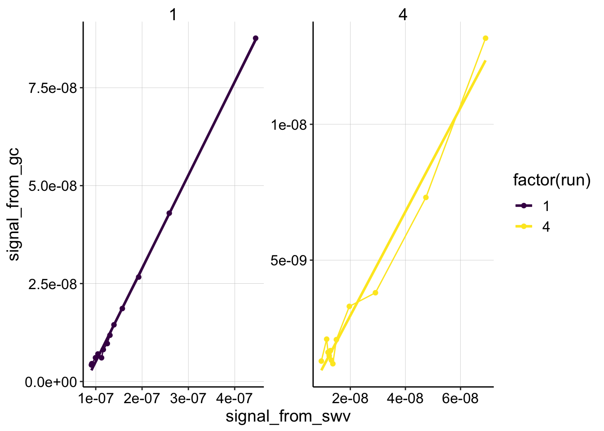
ggplot(swv_gc_psoralen_2 %>% filter(reactor=='transfer' & electrode_from_swv=='i1' & rep>0 & rep<14), aes(x = signal_from_swv, y = signal_from_gc, color=factor(run)))+
geom_line()+
geom_point(aes(size=rep))+
geom_smooth(method='lm',se=F)+
scale_color_viridis(discrete = T)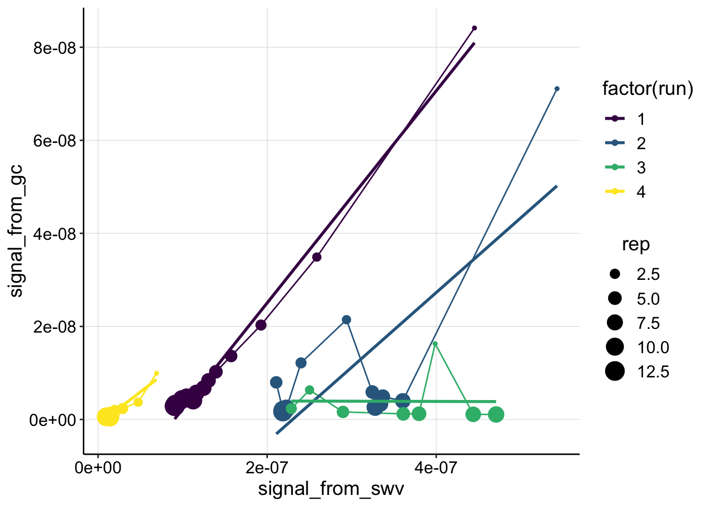
Runs 1 and 4 only
ggplot(swv_gc_psoralen %>% filter(reactor=='transfer' & electrode_from_swv=='i1' & rep>0 & rep<14 & run %in% c(1,4)), aes(x = signal_from_swv, y = signal_from_gc, color=factor(run)))+
geom_line()+
geom_point()+
geom_smooth(method='lm',se=F)+
facet_wrap(~run,scales='free')+
scale_color_viridis(discrete = T)
ggplot(swv_gc_psoralen_2 %>% filter(reactor=='transfer' & electrode_from_swv=='i1' & rep>0 & rep<14 & run %in% c(1,4)), aes(x = signal_from_swv, y = signal_from_gc, color=factor(run)))+
geom_line()+
geom_point()+
geom_smooth(method='lm',se=F)+
facet_wrap(~run,scales='free')+
scale_color_viridis(discrete = T)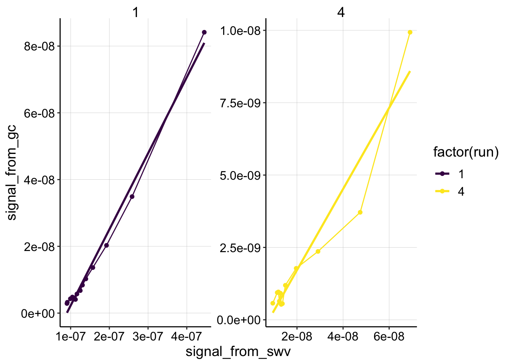
(swv_gc_psoralen_lms <- swv_gc_psoralen %>%
filter(reactor=='transfer' & rep>0 & rep<14 & electrode_from_swv=='i1') %>%
group_by(run,treatment,electrode_from_swv) %>%
do(tidy(lm(signal_from_gc~signal_from_swv,.))))## # A tibble: 8 x 8
## # Groups: run, treatment, electrode_from_swv [4]
## run treatment electrode_from_… term estimate std.error statistic
## <chr> <chr> <chr> <chr> <dbl> <dbl> <dbl>
## 1 1 psoralen i1 (Int… -1.87e- 8 5.98e-10 -31.3
## 2 1 psoralen i1 sign… 2.38e- 1 3.24e- 3 73.5
## 3 2 psoralen i1 (Int… -3.37e- 8 1.39e- 8 -2.42
## 4 2 psoralen i1 sign… 1.61e- 1 4.41e- 2 3.65
## 5 3 psoralen i1 (Int… 6.13e- 9 1.21e- 8 0.505
## 6 3 psoralen i1 sign… -1.87e- 4 3.35e- 2 -0.00558
## 7 4 psoralen i1 (Int… -8.73e-10 2.81e-10 -3.10
## 8 4 psoralen i1 sign… 1.91e- 1 9.99e- 3 19.2
## # … with 1 more variable: p.value <dbl>(swv_gc_psoralen_lms_2 <- swv_gc_psoralen_2 %>%
filter(reactor=='transfer' & rep>0 & rep<14 & electrode_from_swv=='i1') %>%
group_by(run,treatment,electrode_from_swv) %>%
do(tidy(lm(signal_from_gc~signal_from_swv,.))))## # A tibble: 8 x 8
## # Groups: run, treatment, electrode_from_swv [4]
## run treatment electrode_from_… term estimate std.error statistic
## <chr> <chr> <chr> <chr> <dbl> <dbl> <dbl>
## 1 1 psoralen i1 (Int… -2.05e-8 1.30e- 9 -15.8
## 2 1 psoralen i1 sign… 2.28e-1 7.03e- 3 32.4
## 3 2 psoralen i1 (Int… -3.69e-8 1.32e- 8 -2.80
## 4 2 psoralen i1 sign… 1.61e-1 4.18e- 2 3.84
## 5 3 psoralen i1 (Int… 4.07e-9 8.85e- 9 0.460
## 6 3 psoralen i1 sign… -4.75e-4 2.44e- 2 -0.0195
## 7 4 psoralen i1 (Int… -1.09e-9 3.68e-10 -2.95
## 8 4 psoralen i1 sign… 1.40e-1 1.31e- 2 10.7
## # … with 1 more variable: p.value <dbl>Processed Dataset
swv_gc_run_1 <- rbind(swv_gc_psoralen %>% filter(run==1 & rep<14 & electrode_from_swv=='i1' & reactor=='transfer'), swv_gc_control %>% filter(run==1 & electrode_from_swv=='i1' & reactor=='transfer'))
write_csv(swv_gc_run_1, "./01_23_19_processed_swv_gc_run_1.csv")
swv_gc_run_4 <- rbind(swv_gc_psoralen %>% filter(run==4 & electrode_from_swv=='i1' & reactor=='transfer'), swv_gc_control %>% filter(run==4 & electrode_from_swv=='i1' & reactor=='transfer'))
write_csv(swv_gc_run_4, "./01_23_19_processed_swv_gc_run_4.csv")
swv_gc_all <- rbind(swv_gc_control, swv_gc_psoralen)
write_csv(swv_gc_all, "./01_23_19_processed_swv_gc_all.csv")See the analysis notebook for further work with the processed datasets.
swv_control_data <- swv_data %>% filter(treatment == "control" &
PHZaddedInt == 75)
unique_id_cols = c("PHZadded", "treatment", "reactor", "run",
"echem", "rep", "minutes", "PHZaddedInt", "electrode")
swv_control_signals <- echem_signal(df = swv_control_data, unique_id_cols = unique_id_cols,
max_interval = c(-0.2, -0.4), min_interval = c(0, -0.4))ggplot(swv_control_data %>% filter(electrode == "i1"), aes(x = E,
y = current, color = rep, shape = reactor, group = factor(rep))) +
geom_path() + geom_point(data = swv_control_signals %>% filter(electrode ==
"i1"), aes(x = E_from_maxs, y = current_from_maxs), color = "red") +
geom_point(data = swv_control_signals %>% filter(electrode ==
"i1"), aes(x = E_from_mins, y = current_from_mins), color = "blue") +
facet_wrap(~run, scales = "free") + scale_x_reverse() + scale_color_viridis()ggplot(swv_control_data %>% filter(electrode == "i2"), aes(x = E,
y = current, color = rep, shape = reactor, group = factor(rep))) +
geom_path() + geom_point(data = swv_control_signals %>% filter(electrode ==
"i2"), aes(x = E_from_maxs, y = current_from_maxs), color = "red") +
geom_point(data = swv_control_signals %>% filter(electrode ==
"i2"), aes(x = E_from_mins, y = current_from_mins), color = "blue") +
facet_wrap(~run, scales = "free") + scale_x_reverse() + scale_color_viridis()ggplot(swv_control_signals, aes(x = rep, y = signal, shape = reactor,
color = factor(run))) + geom_line() + geom_point() + facet_wrap(~electrode) +
scale_color_viridis(discrete = T)